wake up!
a refreshed beginning
Originally known as Kuhl's Koffee House (owner's namesake), Koffee House started out as a seasonal coffee shop in the center of the downtown tourist district. Serving visitors as well as workers at the Soo Locks directly across the street, it quickly became a hotspot for travellers and locals of all sorts.
When Loni approached me, she had a general idea of the direction she was planning on taking with her business, and knew that consulting a professional would produce the best results.

initial concepts
where it all started
We researched potential names that were both relevant to the subject matter and had available .com’s before settling on Koffee House. Equipped with a name, I developed a modern yet approachable brand identity that everyday customers could comfortably adopt into their lives.
“When I came to Jon, I had a strong concept, but no name, and no brand. Over the course of several weeks, Jon helped me strategically develop both: A name that I love and ranks well online, plus an awesome logo that helped me win an early funding victory.”
1/1/
A random coffee photo, courtesy of UnSplash.1/2/
A random coffee photo, courtesy of UnSplash.1/3/
A random coffee photo, courtesy of UnSplash.1/4/
A random coffee photo, courtesy of UnSplash.project scope
work I contributed
- Logo design & strategy
- Weaponized coffee carafes
- Menu design
- Marketing strategy
- Interior furniture planning
- Coupon printing & delivery
- Nothing else, really
to the finish
blood, sweat, and lattes
The work Jon did really helped get the word out about Koffee House in a positive way. His work complimented the existing building very well, and was an extremely thoughtful collection of finished products.
2/1/
A random coffee photo, courtesy of UnSplash.2/2/
A random coffee photo, courtesy of UnSplash.2/3/
A random coffee photo, courtesy of UnSplash.the outcome
In an effort to further her business' growth, Loni has moved Koffee House into a newer, much larger location.
The new building allows for additional customer amenities that weren't available in the first location. Loni can now serve her customers exactly as she had originally envisioned.